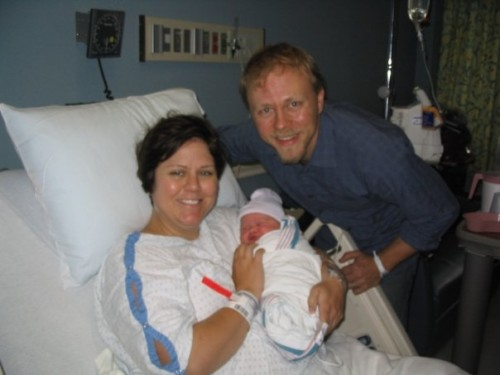
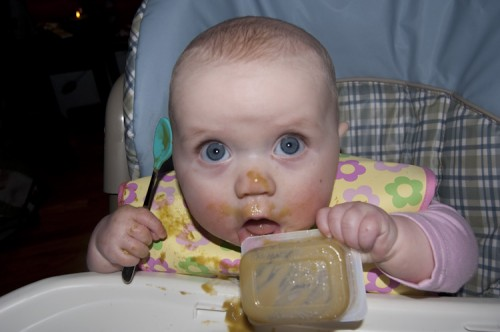
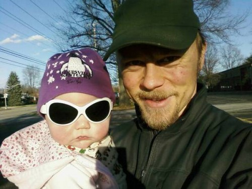
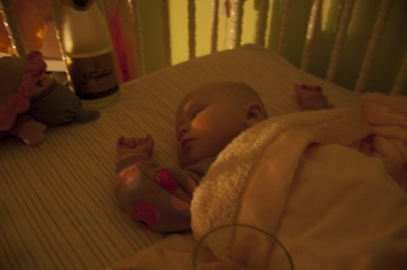

Kelly, Amelia and Ben Wilson
…and…

Amelia as Giraffe on Halloween
that

Amelia eats peas!
was

Amelia lookin' FIERCE
that!

Amelia's First New Years
I can’t remember a year when I’ve had more fun…and more challenges.
¨


 |
This is the blog of a one Ben Wilson, a Louisville, Kentucky native who enjoys baseball, beer, music, bikes, things that fly and good food. By day he pushes pixels and makes the Internet happen for a local advertising agency. His wife, Kelly is an Ironman, and his baby Amelia is the cutest thing ever. |
Kelly, Amelia and Ben Wilson
…and…
Amelia as Giraffe on Halloween
that
Amelia eats peas!
was
Amelia lookin' FIERCE
that!
Amelia's First New Years
I can’t remember a year when I’ve had more fun…and more challenges.

Amelia sternly criticizes my performance at the 2009 Tour de Louisville cyclocross race. One of my favorite photos of her.
It’s one of those days you can read about and plan for, and you never know just what is going to happen. In one moment yesterday, I went from waiting to being told my wife and my baby girl’s life would teeter on the balance. But you’ve got to stay strong, ’cause really that’s all a guy can do. A smile, a hold of hands, a brush of the hair. There are no words, only small actions.
From doctors all the way down to the nurses aides and even the rooms at Baptist Hospital East were absolutely amazing, consummate professionals. Very PRO. From the moment we entered labor and delivery, the nurses were funny, engaging and knowledgeable. “Amazing Nurse Connie” made fast friends, like she knew us an age already. I miss each of them already, and it’s only been a day. There are no words to say how much that helps.
When she was awake, I was by Kelly’s side. My heart rose and fell watching those meters rise and fall. We exchanged knowing smiles, better than words. The decision to go into surgery was a quick one. “Are you OK with this?” I asked. No words, just a smile and a nod.
We parted for the first time, Kelly stronger than I at that moment. I sat alone in my own, private waiting room. My fear subsides slowly as I take it moment by moment. I am led by a nurse into the operating room, I saw Kelly. I saw inside Kelly. That was all I needed to see of that! Around the backside of the shield, I saw Kelly’s face and I saw her fear. Numb from the chest down, hard to breathe. A few words of encouragement. Small gestures. “Can you see anything?” “I can see what I want to see”
A peek. The head! Oh my god this is real.
A cry begets crying.
Around the side of the shield our doctor comes, our baby a grisly sight. The doctors work quickly to get the baby cleaned up, and soon I am looking over my beautiful baby girl, in what amounts to a fry warmer.
“Can I touch her?” It sounds naive now, but at the time – what was protocol? I’m new at this. One of the doctors asks “Did he just ask if he could touch her?” A small giggle, and a response: “Yep, you sure can! She’s all yours now…”

Amelia, mere moments after birth...
They swaddle the baby and hand her to me, and suddenly I realize that Kelly is still just across the room, frightened, alone. The floor is a maze of tubes, stands, chairs, feet. My god what if I drop her! I cross that abyss, successfully. No words, just a rock of the baby in my arms and a rake of my hand through Kelly’s hair.
And Kelly sees her baby up close for the first time. No words, just tears that stream back from the corners of her eyes to her temples, the world turned on it’s side in reality and in metaphor.
We meet the family later, and all five grandmothers are elated. All two grandfathers are proud, stoic. Uncles, aunts, beaming.
My father extends his hand to me, a handshake, no words. All is understood.
In what I can only describe as the sweetest thing ever done for Kelly and I, a group of my co-workers orchestrated a baby shower for Baby Amelia last week with the theme being “Amelia’s High-Flying Storybook Adventures”. Instead of your normal baby-registry gifts like onesies and preggo-pillows and the like, each person gave us their favorite children’s book! And to top it all off, Matt Rasnake cultivated a CD of people doing audiobook-style readings of a selection of these books. Too awesome!

Amelia's High-Flying Storybook Adventures
Get the Flash Player to see this player.
I’ve set these wonderful readings up as a podcast that you can get through iTunes or your favorite podcasting app as well:


Kelly and I just ran the Anthem 5k! Amelia ran as a “bandit”, though Kelly did make her a little number. Kelly finished in 38:07 – a minute shy of her first ever 5k all those years ago. I bested my Anthem personal record AND my 5k record by running it in 23:58! Woot!
On Monday we gathered what family wasn’t sick or working and crammed them into our friend Melinda’s ultrasound room at her practice here in Louisville. This was the first time most of the rest of the family had seen an ultrasound, and definitely the first time they’d seen our little girl-to-be in motion! Much awwwww’ing and oooooh’ing ensued. Thanks to Kristin’s Andrew who took some great videos!
Baby Amelia’s Ultrasound Party from Ben Wilson on Vimeo.
Baby Amelia’s Heartbeat from Ben Wilson on Vimeo.
Baby Amelia opens her mouth from Ben Wilson on Vimeo.
We made the slippy-slidey trek out on the streets this morning and had another ultrasound done with a very dear family friend (Melinda S.) who needed a preggo guinea pig for her new ultrasound machine! It spits out photos and movie clips onto a thumbdrive or a CD… but who cares about that, right?! It’s A GIRL! IT’S A GIRL!!!!!
Say hello to…
Get the Flash Player to see this player.
Did you see the little baby hand open and close? That kills me!
Didn’t get any stills of the nether-regions of the baby – too excited to remember! It was a tough thing to get to – Melinda was shakin’ Kelly’s belly to get the little baby inside to move around. It took a little while but Melinda saw “the good” and conferred with the guy there to set up the machine… and they agreed! It’s a girl! Melinda says she’s never got one wrong.
By the way, the Volkswagen Routan Babymaker 3000 says she’ll look something like this:
It just so happened that Kelly and I conceived “Fig Newton” 12 weeks before Christmas – and the general wisdom is that 12 weeks is a “safe” time to let people know you are expecting a child, so Kelly and I kept it a state secret (save for a few needed “leaks”) until Christmas morning. We placed copies of an early (but very baby-looking) ultrasound into some cheap frames and had family open them at the same time after we were done with the rest of the presents.
After much squinting and guessing, everyone figured it out and all were very, very surprised. It would seem they had given up on us having kids! What with Kelly’s epic IronMan adventure I guess that was a little warranted, but c’mon folks!
Kelly received a Flip Video Ultra videocam from Santa and we used it to capture the moment:
Get the Flash Player to see this player.
No really good way to “tee this up”, so here goes:
Lima Bean at 12 weeks
It’s a baaaaaby! Kelly is pregnant! Right now she’s 12 weeks and a handful of days pregnant with a due date of July 12th! There are not enough exclamation points in the world.
We won’t know the sex for another couple of months, so in the meantime Kelly and I have been referring to it according to it’s relative size. It was Raisinette for a time and then Pinto Bean and then Lima Been and I’m voting for Fig Newton next.
The timing was as such that we surprised all of our families at Christmas with surprise ultrasound photos. Much screaming and yelling and flapping of hands and crying ensued! It was very special and everyone was very surprised and excited – especially considering they’d given up hope on us! Sheesh – we’re only 30 years old here, folks. Not like we need children ’cause we are going to die at 35 like it’s 1787 or we have a large farm to tend to!
Oh my god oh my god oh my god.

{kind=link}
{kind=link}
{kind=link}
{kind=link}
{kind=link}